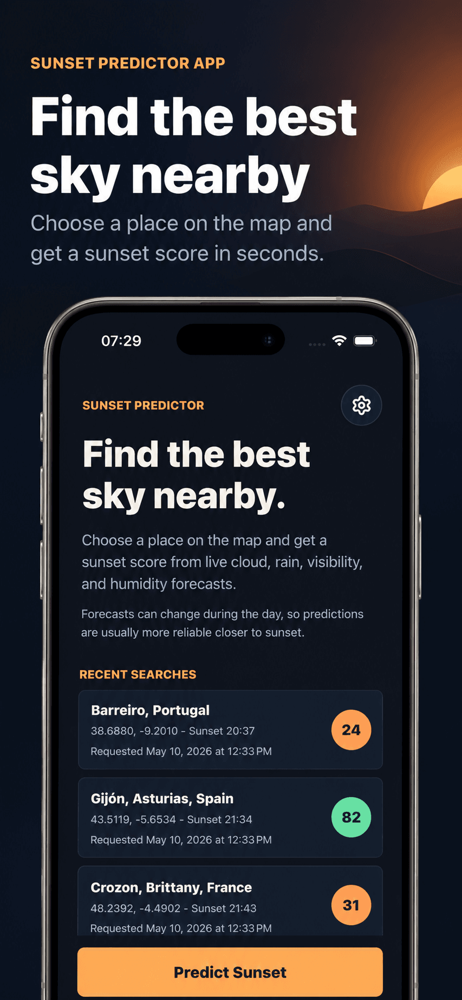
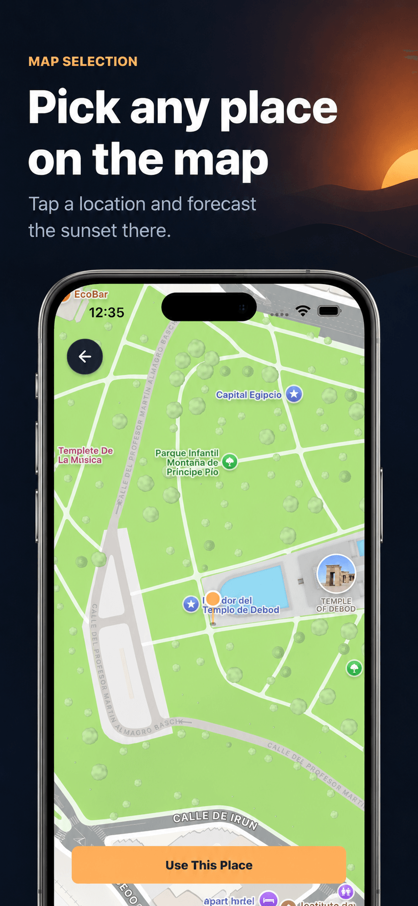
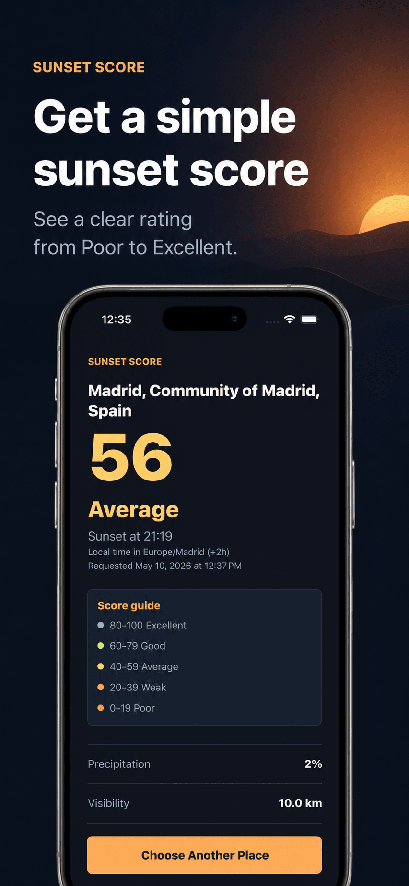

Sunset Predictor App
Sunset weather & sky score.
Check sunset quality before you go. Pick any place on the map and get a simple score based on forecast conditions.
Plan Your Perfect Sunset
Sunset Predictor helps you choose a place on the map and see how good the sunset is likely to be before you go. The app analyzes weather forecast details such as cloud cover, rain probability, visibility, humidity, and local time to create a simple sunset quality score.
Whether you are planning a walk, a photo session, a trip, or a quiet evening outdoors, Sunset Predictor helps you decide where and when to watch the sky.
App Preview



Features
- Choose any sunset location on the map;
- get a sunset quality score and rating;
- view useful weather details for your selected place;
- check local time for the prediction location;
- save and reopen recent searches;
- switch app language in Settings;
- designed for travelers, photographers, and sunset lovers.
Forecast-Based Guidance
Sunset conditions can change quickly, but Sunset Predictor gives you a clear forecast-based estimate so you can plan with more confidence.
Find better sunsets. Pick the right place. Enjoy the view.
Contact
For questions, feedback, or support, email mr.oleski.info@gmail.com.
Legal
Read the Terms and Conditions for details about using Sunset Predictor App.